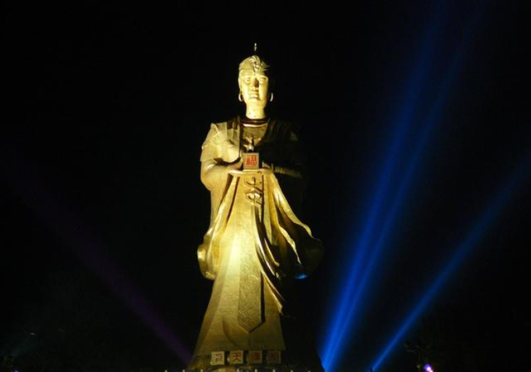

花灯璀璨，魅力梧州
-
雨果说过：“人类没有任何一种重要的思想不被建筑艺术写在石头上。”
走进骑楼城，如同走进了骑楼博物城。在这里，体现水都风韵的清水墙，西式风格的铁栏观景阳台；
西化痕迹较浓的罗马柱、圆拱形窗；梧州特有的水门和拴船铁环等建筑构件被突出表现于立面之中。
+ 查看详情
-
封王地内经常演绎着曾经的盛典——封王大典，那一段历史让这一个小城增添了一圈光环，这一圈光环一直笼罩着这个小城。
现在的长寿桥是一座风雨桥，造型美观，顶上盖着碧绿的琉璃瓦。远望大桥，如长虹卧波，与岸边的古榕相映成趣。近看则吊梁画栋，每一角飞檐都堪称精美，红红的灯笼在桥檐下随风摆动。
+ 查看详情
-
梧州龙母信仰起源于战国时代，龙母文化是中华民族龙文化的一个重要组成部分，传说中的龙母，是南越部族的首领（先秦时期百越各部落的其中一支部落），也被称为西江河神，自当时的影响力是非常大的。
+ 查看详情
-
冰泉豆浆斐声遐迩、得天独厚的是“冰井泉香”的井水。“冰井
冰泉豆浆
冰泉豆浆(3张)
泉香”自唐朝已出名，《梧州府志》记载：“梧州城东有井出冰泉，井水甘凉清冽。”梧州市冰泉豆浆馆坐落在白云山脚的冰泉冲，已有60多年经营历史，冰泉豆浆以它“香、滑、浓”独具风味，驰名中外
+ 查看详情
-
梧州龟苓膏，广西壮族自治区梧州市特产，中国国家地理标志产品。是历史悠久的传统药膳，
相传最初是清宫中专供皇帝食用的名贵药物，它主要以鹰嘴龟和土茯苓为原料，再配生地等药物精制而成。
其性温和，具有清热去湿、滋阴补肾、养颜提神等功效，因而备受两广一带以及东南亚人的喜爱，
并畅销中外，远近闻名。
+ 查看详情
-
河粉又有称“汤粉”、“老友粉”。以扁米粉为主，佐以瘦肉牛肉牛腩等卤肉，适量调味料以及青菜少许，用猪骨鲜汤熬煮而成，肉香卤味尽贯于米粉之中，纵远观亦能闻见香泽浓郁。
+ 查看详情

梧州龙母太庙位于广西梧州市城北桂江东岸，桂林路北端，始建于北宋初年。位于市城北桂江东岸，桂林路北端，始建于北宋初年，明万历、清康熙、雍正年间曾重修
了解更多
骑楼城位于广西梧州河东老城区，现存骑楼街道22条，总长7公里，最长街道达2530米，骑楼建筑560幢，规模之大、数量之多，国内罕见。
了解更多
永安王城位于梧州市蒙山县城。它是太平天国封王建制的地方！平天国历史文化园、福寿文化、古榕公园、特色街区等子项目，打造整体服务品质较高的旅游休闲景区
了解更多
-
梧州龙母太庙
-
龙梧州是龙母的故乡，民间传说龙母姓温，诞生在战国时期的楚国，生活于秦代。传说有一天，她到江边去洗衣服，从水中捞出一枚巨蛋带回家。
经过7个月27天，石蛋裂开了，窜出五条龙。经过细心喂养，五条龙长大后感谢龙母养育之恩，帮助她与水灾、旱灾和土豪恶吏作斗争，造福黎民百姓，
珠江流域人民便将温氏尊为“龙母”，世代不忘龙母恩泽，建龙母庙，年年祭祀，祈求风调雨顺、国泰民安。

-
骑楼风情，摇摆纸上
-
骑楼城是梧州近现代百年商贸繁华的历史见证：梧州，坐落于浔、桂、西三江水口交汇处，地理位置得天独厚，是岭南文化和珠江文化的发祥地，
古代珠江流域和岭南地区的政治、经济、文化中心，更成为了近、现代百年“两广商埠”、“水上门户”。1897年梧州辟为通商口岸后，骑楼城雨后春笋般拔地而起。
原汁原味的22条街连绵成片汇聚了560栋中西经典骑楼，不仅是“百年商埠”昔日峥嵘岁月见证。时间本不是用来催老的，遇到大爱
，她只会更青春，风姿更卓绝！如今这位中西混血美人沐浴着中国经济改革开放大发展的春风，重返“青春”。
新时代梧州精神:是海纳百川,力争上游
一黄一绿两种颜色汇集到梧州，并未真正融合，形成了西江梧州段一条江两种颜色的奇观
电话：0774-256974
邮箱：784858070@qq.com
地址：
广西梧州丰业花园18号
陈一先生有限公司
备案号：http://ccj.chenzhenlin.top/meiliwuzhou/